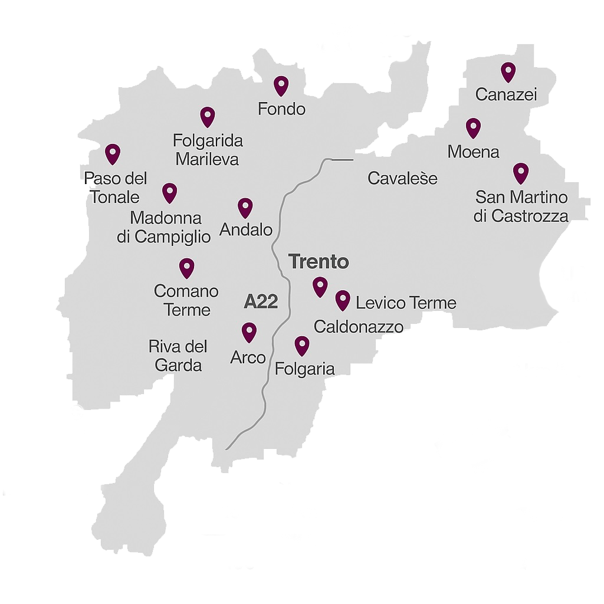
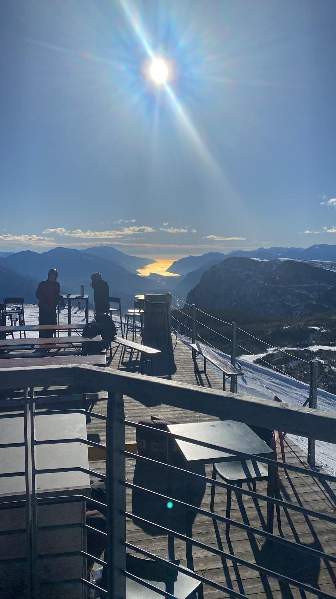

Territorio
Trentino
Una terra dove la natura si esprime con una bellezza straordinaria. Montagne imponenti, boschi
secolari e vallate che si tingono di colori sempre nuovi offrono scenari unici in ogni stagione.

D’inverno, le cime innevate creano paesaggi fiabeschi, mentre d’estate i prati in fiore e i
laghi cristallini regalano momenti di pura armonia. Qui, la natura non è solo uno sfondo, ma
un’esperienza da vivere: tra sentieri panoramici, silenzi rigeneranti e orizzonti infiniti, il
Trentino accoglie chiunque voglia lasciarsi affascinare dalla sua autenticità.
Best
Landscape
Clicca per scoprire
Visita la mia galleria di foto
"Dolomiti: le Montagne più belle del mondo"
Valle dell'Alpago

Cima Paganella

Cima tosa e Passo Grostè

MISSION
Questa galleria fotografica nasce dalla mia passione per la montagna e dallo stupore che ogni
uscita sugli sci nelle Dolomiti trentine riesce a regalarmi.
Attraverso questi scatti, voglio condividere la bellezza unica di queste montagne, dalle vette imponenti ai panorami mozzafiato che caratterizzano la provincia di Trento.
Attraverso questi scatti, voglio condividere la bellezza unica di queste montagne, dalle vette imponenti ai panorami mozzafiato che caratterizzano la provincia di Trento.
Gallerie
Da Madonna di Campiglio con le maestose vette del Brenta, a Folgaria con i suoi panorami
sconfinati.
Dalla Paganella con vista sulla Valle dell'Adige, a Obereggen con i suoi boschi
innevati, fino a Passo Brocon con la sua natura autentica e incontaminata.
Clicca sui punti
della mappa per scoprire le gallerie fotografiche dedicate a questi paradisi montani.